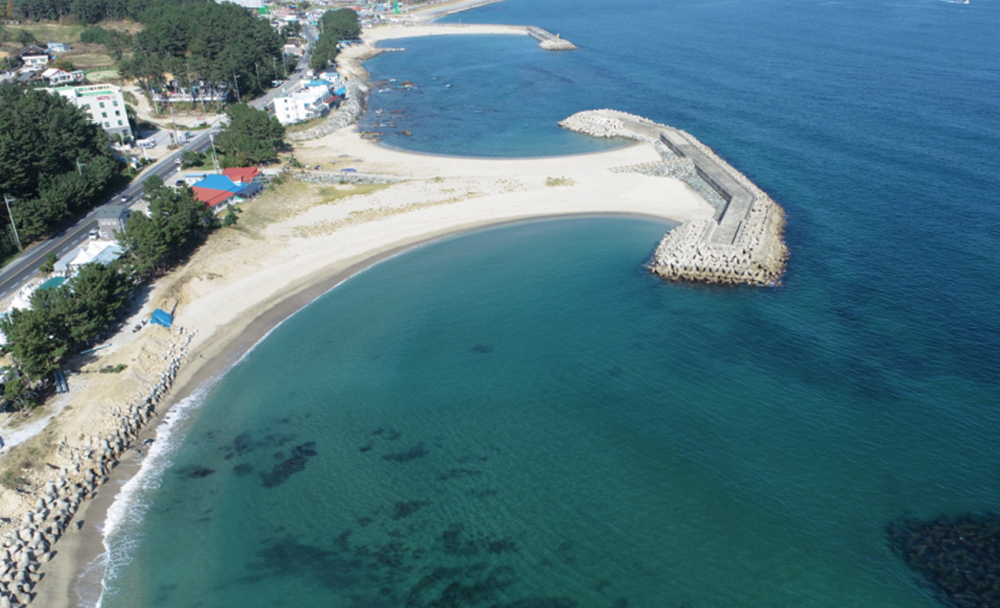

현장의 기준을 세우다
공간 조건과 관측 자료를 확보합니다.

연안 · 하천 · 항만 · 육상
측량과 해양 관측, 수질·퇴적물 시료, 생태 조사처럼 연구 목적에 맞는 방법을 연결합니다. 무인선은 여러 관측 수단 중 하나입니다.
관측 자료에서 적용까지
일반적인 연구 흐름을 보여주는 탐색 도구입니다. 실제 분석 결과나 하나의 고정된 절차를 나타내지 않습니다.
현장과 공간의 조건을 연구 목적에 맞게 기록합니다.
하구·하천 과정 · ID 15수질과 생태 자료를 관련 환경 조건과 함께 검토합니다.
해양생태계 보전 및 모니터링 · ID 84관측과 조건을 바탕으로 적절한 모델링 방법을 적용합니다.
수환경 통합모델링 · ID 46모델의 적용 조건과 결과 해석 범위를 함께 살핍니다.
재해·재난 예측 · ID 55자료를 사업 목적과 연결하고 근거와 한계를 전달합니다.
해상풍력 디지털 입지정보도 구축 · ID 62다섯 연구 순간
아래는 원래 기술 목록의 일부를 연구 흐름으로 연결한 탐색 예시입니다. 공식 4개 분류와 21개 기술 ID는 기술 페이지에서 보존합니다. 영문 기술명은 검토용 번역입니다.
공간 조건과 관측 자료를 확보합니다.
수질·생태 자료와 해역 이용 조건을 살핍니다.
관측과 조건에 맞는 수환경·생태 모델링을 적용합니다.
모델 결과는 적용 조건과 함께 확인해야 합니다.
연구 근거를 프로젝트 목적에 맞춰 전달합니다.
서로 다른 제품의 화면 예시
Discover, Predict, Monitor는 각각 다른 AX 플랫폼을 소개하는 예시입니다. 하나의 통합된 작업 절차를 뜻하지 않습니다. 아래 화면은 내부 검토용 정적 캡처와 짧은 미리보기입니다.
위성·관측 자료를 활용하는 플랫폼 화면 예시입니다. 캡처의 현재 버전과 사용 권리는 공개 전 재확인이 필요합니다.
약 3초 MP4 · 재생 요청 시 로드 · 권리/버전 재검증 전 내부 검토
별도 제품의 정적 화면 캡처입니다. 실제 분석 결과·현재 운영 상태를 표시하지 않습니다.
약 3초 MP4 · 재생 요청 시 로드 · 권리/버전 재검증 전 내부 검토
부이 관련 플랫폼의 정적 화면 캡처입니다. 표시된 정보는 실시간 해양 관측으로 간주하지 않습니다.
약 3초 MP4 · 재생 요청 시 로드 · 권리/버전 재검증 전 내부 검토
원본 캡처의 전체 화면비를 유지합니다. 공개 전에 제품명, 화면 버전, 권리와 화면 내 데이터 표기를 확인합니다.
AX 플랫폼 소개
문서로 확인하는 기반
아래 원본 연결과 문서 표기는 내부 미리보기입니다. 유효성·최신성·공개 권리를 재확인해야 합니다. 영문 표기는 설명용 번역입니다.

품질경영시스템(ISO 9001)

벤처기업 확인서

해양조사정보업 등록증 (수로측량)

기상사업 등록증

딥러닝을 이용한 수온시계열 예측자료의 미래시점 자료동화를 통한 해양예측 시스템

해수면 온도 영상 복원 시스템 및 방법

폭풍해일 시나리오를 이용한 범람 예측 방법 및 그 시스템
GeoSR · 2000년 설립
GeoSR은 해양·하구·하천을 포함한 환경 분야에서 조사와 분석, 모델링을 수행합니다.